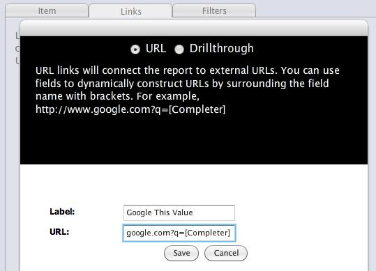

Report Editor Documentation
Need help building reports in Easy Insight? Here's the documentation to guide you through the process.

Table of Contents
- What are the main report pages?
- How do I create a new report?
- How do I assemble a basic report?
- What are the basic field types?
- How about specifics on the top report editor elements?
- How about specifics on the tabbed elements?
- How do I customize a field once it's in a report?
- What are hierarchies and how do I use them?
- How do I link to external URLs from a report?
- How do I tie together reports through links?
- How do I automatically email out a report on a scheduled basis?
What are the main report pages?
There are two main pages for reports, the Report View and the Report Editor. The Report View is a simplified view of the report. It shows the report itself, any filters, and some basic functionality for exporting the report to Excel, PDF, and so on. The Report Editor is a much more sophisticated screen for modifying or building new reports.
How do I create a new report?
You can create new reports from your Home page. If you have a single data source on your system, you'll automatically start off on that particular data source. If you have multiple data sources, you'll need to click on a particular data source from the available list. Click on the New Report button and you'll navigate into the report editor.
What all is in the report editor?
There are several basic elements to the report editor that you'll want to learn how to use.
First, there are several controls along the top of the screen, contained in a black bar. These controls enable you to close the report editor, save your report, retrieve fresh data, and several other options.
Next, there are a set of five tabs: Getting Started, About This Report, Data, Filters, and Export. Each tab contains additional report information or controls to further build out your report.
In the upper right corner of the report editor, there may be a gray box of Suggestions. These Suggestions are specific to the data source and the report you've built as is, providing helpful operations for quickly handling common relevant tasks. For your example, the Highrise data source has several default suggestions around building reports against Deals, Cases, and Tasks.
The report type dropdown box allows you to change the type of the report from the default List to a variety of other options, such as Charts, Trees, and other types. The Edit Report Properties button will pull up a variety of more advanced additional options useful for customizing your report.
Down the left side of the report editor, you'll see the list of available fields, based on your data source. You can open up folders if present to see more available fields.
Across the center of the screen, you should see one or more Drop Areas, labeled along the lines of "Drop Field Here." To create a report, drag fields from the left hand list into the appropriate Drop Area. You can also double click on fields to quickly add them to the report.
What are these field types?
You'll notice that fields have a basic type indicated by an icon to the left of the field in that left hand list. Basic field types are as follows:
- Grouping
A grouping represents a value by which you'll want to group up data. For example, Customer, Deal Status, and Responsible Party are examples of groupings.
- Measure
A measure represents a numeric metric which you'll want to aggregate by some mathematical operation. Revenue and Quantity are examples of measures. Numbers are not necessarily measures--you might have something like Deal ID which is a number, but does not represent a metric you'd want to sum or average.
- Date
A date simply represents a point in time.
How about specifics on the top report editor elements?
- Close Editor
Closes the report editor and returns you to the Home page.
- Save
Saves the report.
- Save As
Saves a copy of the report under a new name.
- Refresh
Refreshes the data on the report. If the data source caches data on Easy Insight, you can use this button to refresh that cached data.
- Ad Hoc Mode
By default, Easy Insight runs the report with each change you make in the report editor. If you have a large data set and/or are building a complicated report, this might get slow. If you click this button, it won't run the report until you manually click the Refresh button or retoggle Ad Hoc Mode.
- New Report
Creates a new report on the existing chosen data source.
- Report View
Opens up the currently selected report in the Report View.
- Search
Search opens up a window for navigating to other reports or dashboards.
- Administer Data
Opens up the data source itself in administrative mode.
How about specifics on the tabbed elements?
- Getting Started
Purely informative, with some basic help information around how to use the report editor.
- About This Report
Shows the report name and description, useful if you're jumping between a lot of the reports and get confused about which one you're actually on.
- Data
- New Calculation
This button creates a new Calcpation, a derived field such as Revenue * Probability. For more informations, see
- New Derived Grouping
This button creates a new Derived Grouping, a derived field such as a custom Deal Channel field on your CRM system. For more informations, see
- New Derived Date
This button creates a new Derived Date, a derived field such as a custom Deal Close Date field on your CRM system. For more informations, see
- New Hierarchy
This button creates a new Hierarchy. Hierarchies are used for drilldown and rollup, particparly in Tree reports.
- Custom Code
This button opens up the custom script editor for your report. For more informations, see
- Customize Joins
This button enables you to change the way in which different subject matters in your report are joined together.
- New Calculation
- Filtering
This tab provides the functionality for refining down your report to only show key subsets of data. The New Filter button gets you started on creating new filters. For more information, see Filter Documentation.
- Export
- Export to Excel
Exports the report to Excel. If the report is non tabpar, it will translated into a List for purposes of display within Excel.
- Export to PDF
Exports the report to PDF.
- Email Report
Emails the report to the chosen address.
- Email Scheduling
Opens up the Schedping window for the report for purposes of schedping email delivery on a recurring basis.
- Export to PNG
Exports to the report to PNG.
- Hyperlink
Shows the hyperlink for bookmarking this report.
- Embed in Website
Provides you with sample HTML for embedding the report inside of an external website. Embedding is done via an IFrame.
- Export to Excel
How do I customize a field once it's in a report?
Once you've added a field to a report, you can click on the ... next to the field's Drop Area to open up the Field Editor. Within the editor, you can take a variety of actions.
If the field is a Grouping, you can toggle the "Group" option to avoid aggregation. You can change the field type to Range in order to look at data in terms of numeric ranges such 0-1000, 1000-2000, and so on.
If the field is a Date, you can change the aggregation level of the date. For example, if you want to look at data by Year, Quarter, Month, or so on, you'd use this window to change that aggregation level from the typical default of Year - Month - Day.
If the field is a Measure, you can change the aggregation of the measure to the following options:
- Sum -- Sums up the data (A + B + C). For most fields, this aggregation will be the default.
- Average -- Averages the data (A + B + C) / N.
- Min -- Calculates the minimum value of the data set.
- Max -- Calculates the maximum value of the data set.
- Count -- Calculates the number of rows in the data set.
- Median -- Calculates the median value of the data set.
- Variance -- Calculates the variance of the data set, useful for more complex calculations.
- Rank -- Calculates the rank of each row in the data set.
- Percent of Total -- Calculates the percent of total for each row in the data set relative to the rest.
- Count Distinct -- Calculates the number of distinct entries. This option is most useful when you start with a Grouping (for example, Deal Name) and change it to Measure/Count Distinct, since it's then showing you the number of Distinct deals in your system.
You can also change the formatting here from the default Number to Currency, Percentage, Interval (milliseconds), Interval (seconds), and Bytes. You can change the maximum and minimum displayed floating points precisions.
For more information on the Links tab, see Creating Links to External URLs and Creating Drillthroughs. For more information on the Filters tab, see Filter Documentation. For more information on the additional report-specific tabs, see Report Types Documentation.
What are hierarchies and how do I use them?
Hierarchies allow you to define a relationship between different groupings to enable rollup and drilldown. For example, you might define a hierarchy of Country -> State -> City or Industry -> Company -> Deal. You can define hierarchies from the report editor by clicking on the Create New Hierarchy button under the Data tab. From here, you'll have a list of available groupings. You can drag groupings from this list into the area to the right to define the hierarchy from top to bottom. You can reorder groupings within the hierarchy. You can also delete groupings by hitting the Delete key while you have the target level selected.
Once you've defined a hierarchy, you can use it in a report just as you use any other field. Certain reports, notably Trees and Tree Maps, require you to define a hierarchy. For other reports, you'll be able to drill through the hierarchy by right clicking or shift-left clicking on the hierarchy value and choosing Drill Down to navigate into the next level of the hierarchy.
How do I link to external URLs from a report?
You can define links to external URLs by editing a grouping and choosing the Links tab. Click on Create a Link. The default option allows you to associate groupings with external URLs. Fill in a Label for the URL Link--this is the value that will appear when you right click on the grouping in a report. For the URL, you can add dynamic elements to the URL, such as query parameters, by surrounding the field name you wish to add to the URL with brackets. You can add multiple fields to a given URL if necessary.
How do I tie together reports through links?
Drillthroughs enable you to connect multiple reports within a shared context. You can define drillthroughs by editing a grouping and choosing the Links tab. Click on Create a Link. Change the radio option to Drillthrough. Fill in a label for the drillthrough--this is the value that will appear when you right click on the grouping in a report. Choose another report as the target report. Any filters on the target report will automatically populate based on filters in the source report, as well as populating on the grouping you drill from. For example, if you have one report showing a list of suppliers and a chart showing detailed information filtered by supplier, connecting the two reports through drillthrough will automatically populate the appropriate supplier on the target report.
How do I automatically email out a report on a scheduled basis?
You can set up a report to email out from Easy Insight on a scheduled basis. You can define report delivery through My Data -> Scheduling. Available refresh intervals are Daily, Weekdays (Monday -> Friday, sorry, no business calendars yet), Monday/Wednesday/Friday, Tuesday/Thursday, Day of Week, and Day of Month. Refresh times are defined in terms of your locale time zone, so if your computer is running in Eastern Standard Time, you will define the refresh in terms of Eastern Standard Time. Times are presented on a 24 hour clock.